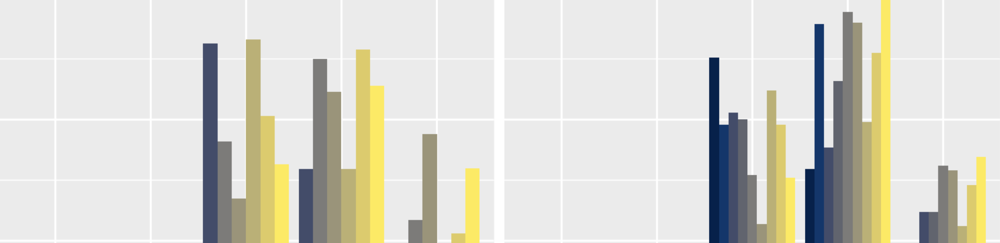

This is the third epidemiology course in the sequence of methods courses. The course focuses on integrating study design methods with advanced statistical analyses. Lectures cover theoretical concepts, including confounding, interaction, and pseudo risks and rates, and several analytical methods including linear, logistic, Cox Proportional Hazards, and Poisson regression methods. The course will also touch briefly on other generalized linear models (e.g. relative risk regression) and methods for handling correlated data (GEE, multi-level modeling). Computer laboratories make use of multiple datasets to provide students with an opportunity to implement the analytical methods covered in lecture. Multivariable methods to test for confounding, interaction, and mediation are taught both in lecture and laboratories. The goal of this course is to provide both theoretical and practical experience in analyzing and interpreting epidemiological data.
Students who successfully complete this course will be able to:
Tuesdays: 1:00 p.m. to 3:50 p.m. in the Hammer Health Sciences Center (HSC)
Jeanine Genkinger, PhD
Phone: 212-342-0410
Email: jg3081@cumc.columbia.edu
Office: 722 West 168th St, 7th Floor, Rm 712
Office Hour: By Appointment
| Teaching Assistant | Office Hour Time | Office Hour Location | |
|---|---|---|---|
| Adiba Ashrafi | ai2337@cumc.columbia.edu | TBD | TBD |
| Precious Esie | pie2104@cumc.columbia.edu | Tuesdays 11:00 a.m. to 12:00 p.m. |
ARB 15th floor conference room (1514) |
| Diana Garofolo | dcg2132@cumc.columbia.edu | Mondays 12:00 p.m. to 1:00 p.m. |
ARB 7th floor conference room (739A) |
| Shadiya Moss | sm4248@cumc.columbia.edu | Mondays 11:00 a.m. to 12:00 p.m. |
ARB 7th floor conference room (739A) |
| John Pamplin | jrp2166@cumc.columbia.edu | Tuesdays 12:00 p.m. to 1:00 p.m. |
ARB 15th floor conference room (1514) |
| Alex Perlmutter | asp2138@cumc.columbia.edu | TBD | TBD |
| Richard Teran | rat2127@cumc.columbia.edu | TBD | TBD |
ARB = Allen Rosenfield Building
There is no required textbook for this course. However, there are required article readings each week specified in the course schedule, located in the “assigned readings” folder on Canvas.
For theoretical aspects of epidemiological research and data analytic methods, the following books are also recommended for reading and have been placed on reserve at the Health Sciences library (text also available online through the Health Sciences Library):
Class will begin with a 1 hour and 50 minute lecture which will be followed by a 50 minute lab session.
Laboratories are designed to provide more informal discussions of conceptual issues, provide hands-on experience of statistical modeling and to provide technical assistance to students. Students will be randomly assigned to a laboratory section. All laboratories are held immediately after class from 3:00 p.m. to 3:50 p.m. in the following locations:
Laboratory Sections and Locations
Students are expected to bring their laptops to class with SAS installed.
*If you do not have SAS installed on your laptop, you will need to let Dr. Genkinger and Adiba Ashrafi know so that we can make arrangements for you. You will need SAS to complete laboratories, quizzes and homeworks.
We will be using audience response questions during lecture to encourage participation and to give students an opportunity to participate during lecture. You will receive points for participating and for answering polls correctly. Your responses will count toward 5% of your grade. You will need to register with Poll Everywhere using your Columbia UNI and password. Your Poll Everywhere account will be linked to your Courseworks gradebook, therefore, your account must be associated with your Columbia email.
If you already have a Poll Everywhere account, verify that it is associated with one of your Columbia email addresses. If you have an account linked to a non-Columbia email (i.e., Gmail, yahoo, Hotmail, etc.), you will need to create a new account. A document will be shared before the first class and poste to Courseworks (Files > Poll Everywhere) detailing the steps necessary to register for a Poll Everywhere account.
To use Poll Everywhere, you can either download the app to your phone or table or access it through the following website: www.pollev.com/jeaninegenki547 . If you would like to use the app on your phone or tablet, please download the app before the first class.
Student grades will be based on:
| Course Item | Grade Weight |
|---|---|
| Homeworks | 20% |
| Pre-semester assessment | 5% |
| Quizzes | 15% |
| Poll Everywhere participation | 5% |
| Midterm exam | 25% |
| Final exam | 30% |
Before the start of the semester students must complete the online pre-semester assessment. It is administered through Canvas (Quizzes) and is due before 10:00 a.m. on the first day of class. The first part of the assessment reviews epidemiologic concepts from pre-requisite Epi courses and the second part reviews concepts from SAS and Categorical Data Analysis. Review materials are posted on Canvas (Files).
The goal of this assessment is to help the instructor and TAs tailor the course and laboratory sessions to students’ level of comfort with pre-requisite material. You will be given 1 hour to complete the assessment. The pre-semester assessment is completion based, but students must complete all of it to receive full credit. The assessment is open book; however, students must work independently to complete the assessment.
Four quizzes (two announced, two unannounced) will be given throughout the semester in either lecture or laboratory sessions. Announced quizzes are take-home and their due dates are listed below in the course schedule. The lowest quiz grade will be dropped so that each quiz counts 5% of the total quiz grade.
This exam will be given in-class on October 15th. It is a closed-book exam. If there is a valid reason for missing an exam, you must notify the instructor two weeks prior to the exam.
The final exam consists of two parts, an in-class exam on Tuesday, December 10th (worth 10% of the final exam grade) and a take-home (open-book) portion due Thursday, December 12th (worth 20% of the final exam grade). The take-home portion of the final exam will be distributed via Canvas at the end of day on December 3rd and will be due in person on Thursday, December 12th at 12:00 p.m.. The take-home portion of the exam should be submitted in person and specific submission details will be provided closer to the exam due date. The exam will cover material presented over the entire semester, but it will focus primarily on post-midterm material. The take-home portion of the exam must be turned in on time. For every day late, there will be a 5% reduction in grade.
| Percentage Range | Letter Grade |
|---|---|
| 98.0 or above | A+ |
| 94.0 - 97.9 | A |
| 90.0 - 93.9 | A- |
| 88.0 - 89.9 | B+ |
| 84.0 - 87.9 | B |
| 80.0 - 83.9 | B- |
| 78.0 - 79.9 | C+ |
| 74.0 - 77.9 | C |
| 70.0 - 73.9 | C- |
| Below 70.0 | F |
If students have questions about their grade on any assignment (homework, quiz, exam) they must bring it to Dr. Genkinger.
The class will be taped with the slides. However, this class is not designed as an online course. The taped classes will only be available on a case by case basis if you need to miss a class due to illness etc. or if you have a disability, or other need for audio reinforcement. Please contact Richard Teran to request regular access or to request access to the tape for a specific class.
Students and faculty have a shared commitment to the School’s mission, values and oath.
Students are required to adhere to the Mailman School Honor Code
Homework assignments:
You may discuss concepts and work through homework problems with classmates; however, the work you submit must be your own (e.g., in your own words, performing your own calculations, providing your own code and results).
It is in violation of the honor code to use answer keys from previous semesters to complete course assignments. Sharing of answer keys either directly or via internet upload is strictly prohibited in this class.
Take-home quizzes:
Final exam:
Anyone found to be in violation of these course procedures will be reported to OSA.
In order to receive disability-related academic accommodations, students must first be registered with the Office of Disability Services (ODS). Students who have, or think they may have a disability are invited to contact ODS for a confidential discussion at 212.854.2388 (V) 212.854.2378 (TTY), or by email.
If you have already registered with ODS, please make sure you inform Sarah Tooley, the School’s liaison to the Office of Disability Services, that you would like to receive accommodations for this class. Then, speak to your instructor to ensure that they have been notified of your recommended accommodations by Sarah Tooley.
The Department of Epidemiology is committed to creating an educational culture that encourages robust, open, and inclusive classroom environments. Key to achieving this goal is to ensure that all students are included in the conversation and feel comfortable expressing themselves. This commitment is part of our collective enactment of the elements of the Public Health Oath in which we agree to “respect the rights, values, beliefs, and cultures of those individuals and communities with whom [we] work.”
An inclusive classroom environment is undermined by microaggressions. Microaggressions are commonplace verbal, behavioral, and environmental indignities, frequently unintentional, that communicate hostile, derogatory, or negative sentiments about individuals on the basis of status characteristics such as race, ethnicity, gender, sexual-orientation, religion, disability, etc. Those who commit a microaggression are usually unaware that they have demeaned another individual, but the consequences for those on the receiving end can be significant. Microaggressions harm individuals by making them feel invalidated, isolated, diminished, and marginalized. They harm the learning environment by making it less inclusive, open and productive.
Recognizing and addressing microaggressions can help mitigate these negative consequences and thereby maintain a robust classroom environment. We believe that responding to microaggressions in the classroom is a critical part of educational growth that leads to a better understanding of the sociocultural issues we seek to investigate as epidemiologists and public health professionals. If you have observed or been the target of a microaggression from a classmate, TA, or faculty member, you are encouraged to bring it to their attention when it happens. Faculty and TAs are willing and prepared to facilitate such engagement, even if they are responsible for the microaggression. If you are uncomfortable speaking up immediately, please contact the TA or instructor outside of class, or another faculty member with whom you feel comfortable, or with any member of the Department senior administration or leadership.